I am a CS student from Poland with a passion for all tech related things. I enjoy working on various projects that challenge my skills and allow me to learn new things.
My primary interests include:

Programming and Software Development

Ethical Hacking and Cybersecurity

Networking and server maintenance
My main goal is to continue learning and growing in the field of computer science, and to make a positive impact through my work. My passion for technology goes back to my childhood, and I am excited to see where it will take me in the future. The future is bright, and I am looking forward to the challenges and opportunities that lie ahead. The challenges I face only make me stronger, and I am determined to overcome them.